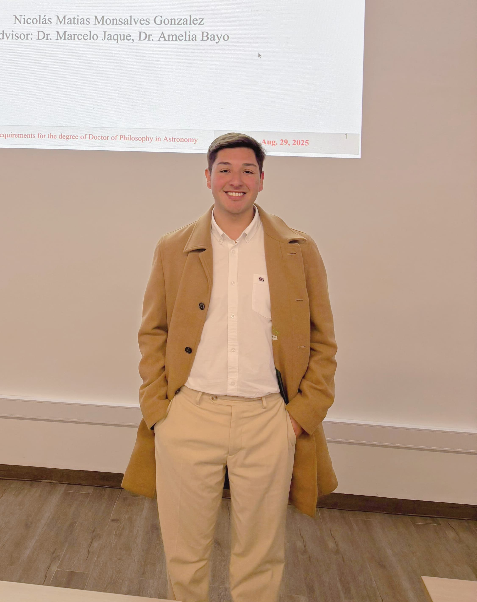
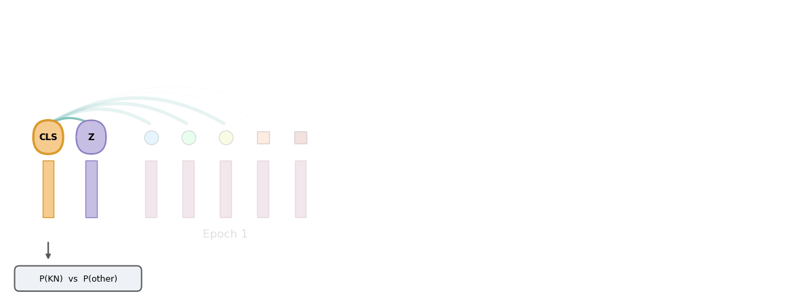
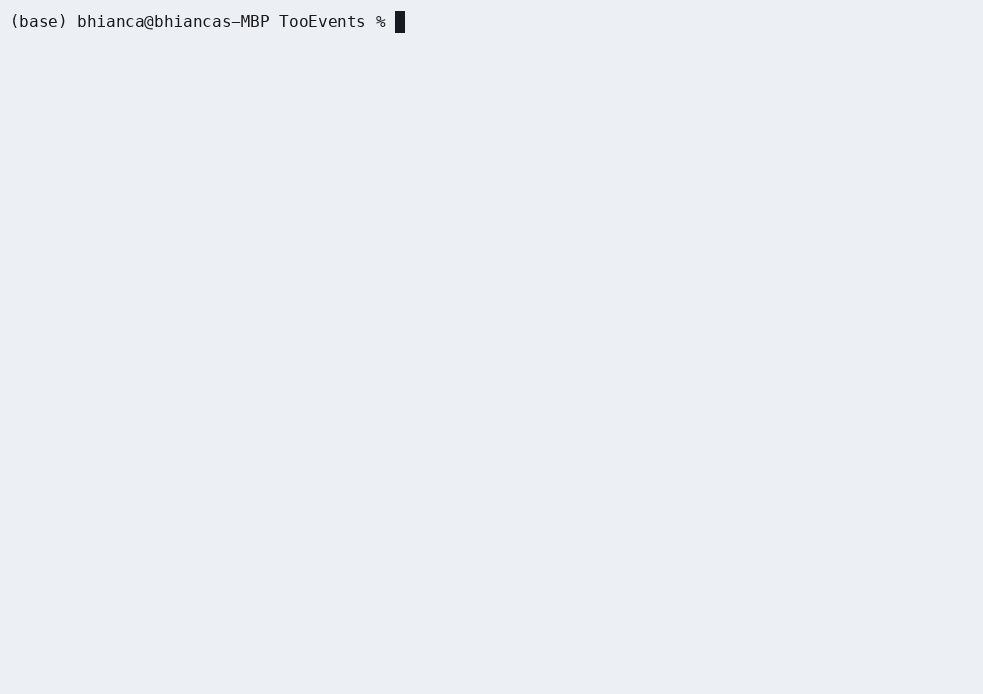
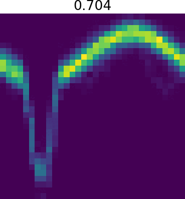
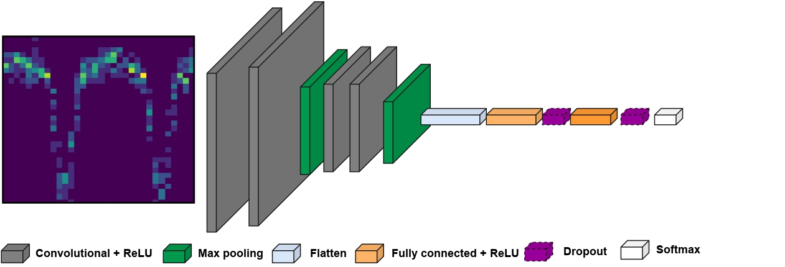
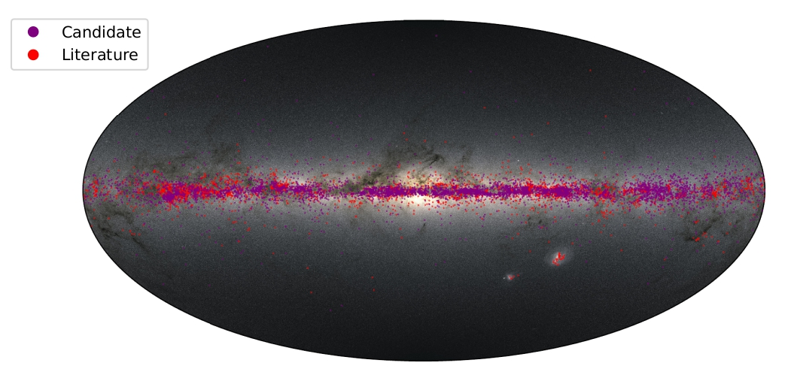
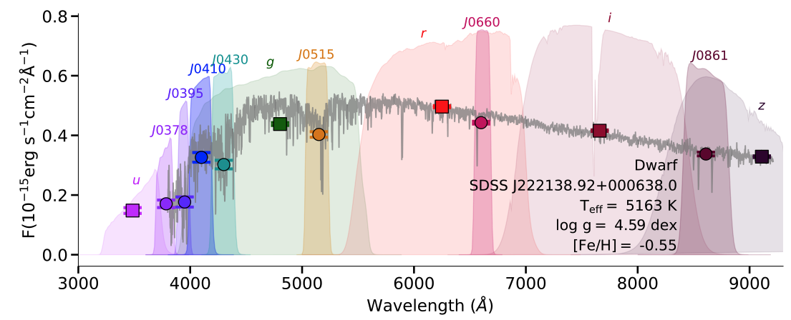
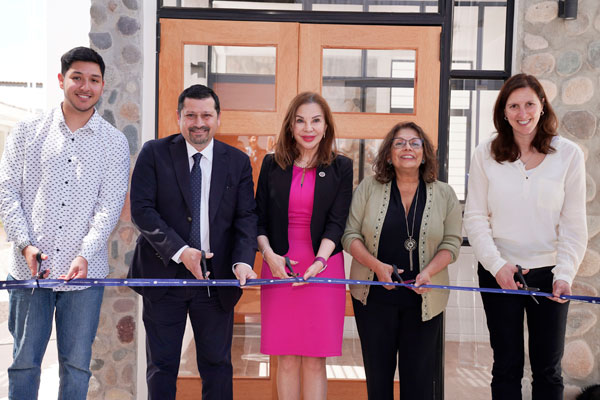
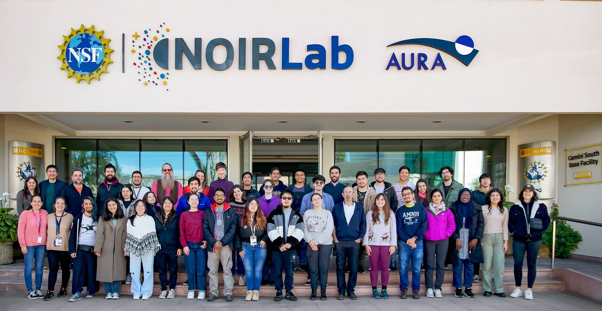

Astronomer · University of Tor Vergata

I am Nicolás Monsalves, an astronomer with a PhD from the University of La Serena. I am currently a research fellow at the University of Tor Vergata, Italy, within the ERC-funded BHianca Group. I am passionate about data-driven methods and how to extract answers from the vast amounts of data available today, applying state-of-the-art algorithms to open problems in astronomy. During my PhD I focused on massive stars and stellar variability, and during my postdoc I am centering my work on chasing transients and observational techniques.
I am developing a transformer-based methodology to identify kilonova candidates in the Roman survey. With a 5-day cadence, a kilonova is caught in only a handful of epochs, so the model has to classify from very few multi-band points. Attention over those epochs shows which detections and upper limits drive the decision.

Our group runs a Large Programme at the VLT, and when a GCN circular arrives someone has to decide within minutes whether the target is worth triggering. I built a Claude Code skill that takes the raw circular and returns a single quicklook report: the localization region and the galaxies inside it with their chance-coincidence probabilities, nested finding charts, magnitude decay predictions, and the visibility from Paranal. It turns a scattered, manual half-hour into one command. The skill is finished and now part of our observing shifts, where I keep it maintained.

Here I apply the convolutional neural network I developed during my PhD to characterize the variability of 3557 OB stars observed by TESS across 71 sectors. The model classifies a phase-folded light curve in milliseconds, so we do not have to commit to a single best period per star. We fold and inspect every candidate period from Lomb-Scargle and autocorrelation, almost half a million in total, and the classifier tells us which ones are periodic variations.

In this work we develop an image recognition model using convolutional neural networks with compact 2D image representations of light curves, enabling the classification of half a million sources in 180 seconds with state-of-the-art accuracy.

In this work we present a catalog of moderate to high probability massive star candidates in the Milky Way. We extended the Hot Luminous OBA star candidate catalog using Gaia DR3 data and developed a balanced random forest algorithm to identify O and early B-type stars.


My academic journey began at the University of La Serena, where I joined a small but growing astronomy group. This close-knit environment allowed me to build strong relationships with my professors and colleagues. After completing my undergraduate degree, I won the ANID scholarship, which enabled me to pursue a PhD at the University.

I have actively participated in the "La Serena School for Data Science: Applied Tools for Data-Driven Sciences," organized by the Association of Universities for Research in Astronomy (AURA). In 2021, I was selected as a student, and since then, I have been participating as a Teacher Assistant every year. I love teaching and helping students realize their potential in the exciting field of data science.

© 2023 NOIRLab/NSF/AURA/G.Damke
Outside of work, I enjoy: